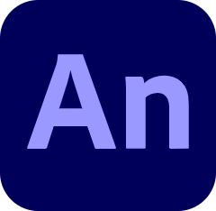
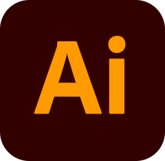
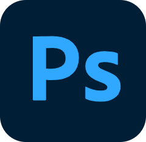

謝欣玲 Xie Xinling (21)
就讀【台南應用科技大學】多媒體動畫系
只是一個對繪畫毫無天分，
卻硬是闖入多媒體動畫系的小菜鳥。
勇於嘗試各種新事物，目前在繪畫、攝影及剪輯師之間反覆橫跳，
接觸過的軟體有...
Adobe系列:
 【 Ae 】 After Effects
【 Ae 】 After Effects-  【 An 】 Animate
-  【 Ai 】 Illustrator
-  【 Ps 】 Photoshop
 【 Lrc 】 Lightroom Classic
【 Lrc 】 Lightroom Classic
 【 Davinci Resolve 】
【 Davinci Resolve 】 【 Clip Studio 】
【 Clip Studio 】電話: 090906xxxx
E-mail: a090906xxxx@gmail.com